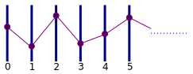
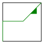
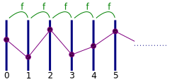
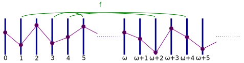
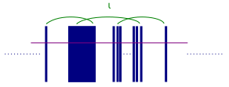
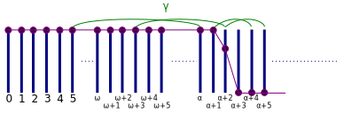
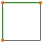
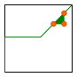
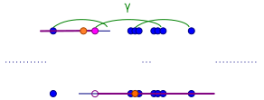

2016 March 5th
Presentation for the Spring Southeastern Sectional Meeting Special Session on Topology and Dynamical Systems
Call an idempotent uppersemicontinuous continuum-valued surjective relation on \(X^2\) a CV-relation. The presenter and S. Varagona showed that an inverse limit of a linearly ordered compactum indexed by an ordinal and bonded with a single CV-relation is metrizable if and only if the ordinal is countable. This result may be generalized to any totally ordered index.To demonstrate this, the presenter will give a simple characterization for the inverse limit bonded by the simple CV-relation \(\gamma\) in terms of the lexicographic product of the factor space and linearly ordered index.

A.K.A. u.s.c. bonding map \(f:X\to C(X)\)


Assume \(X\) is a Hausdorff continuum

\(\varprojlim\{X,f,L\}\subseteq X^L\) is metrizable.

\(\varprojlim\{X,\iota,L\}\cong X\) is metrizable
We now assume \(f\not=\iota\).

\(\varprojlim\{I,\gamma,\omega_1\}\) is the closed long ray of length \(\omega_1\), so not metrizable (or even Corson compact, \(W\), Frechet-Urysohn, first-countable, etc.)
 
There exist \(x,y\in I\) such that \(\langle x,x\rangle,\langle x,y\rangle,\langle y,y\rangle\) are all in \(f\).
For any total order \(L\), we may define \(\check L=\{A\subseteq L:a\in L,b\lt a\Rightarrow b\in L\}\) and \(\hat L=\{A\in\check L:A\text{ is closed}\}\), which are both totally ordered by \(\subseteq\).

If \(f\) has \(\Gamma\), then \(\varprojlim\{X,f,L\}\supseteq\varprojlim\{2,\gamma,L\}=\check L\)
FACT: \(\check L\) is metrizable iff \(\check L\) is second-countable iff \(L\) is countable
Therefore, \(\varprojlim\{X,f,L\}\) cannot be metrizable unless \(f\) lacks \(\Gamma\) or \(L\) is countable.
\(\check L\) contains the lexicographic product \(L\times_{lex} 2\), adding new points for leftward sets without a supremum.
Suppose \(M\) is a (compact) LOTS with minimum \(0\) and maximum \(1\).
A point in \(\varprojlim\{M,\gamma,L\}\) is a thread which is valued \(1\) on some closed leftward set \(A\in\hat L\), except it may have any value of \(M\) on its supremum (if it exists), and \(0\) otherwise.
\[\varprojlim\{M,\gamma,L\}\cong^?\hat L\times_{lex}M\] where \(\langle A,m\rangle\) corresponds to the thread valued \(m\) on \(\sup A\), valued \(1\) for points in \(A\setminus\{\sup A\}\), and valued \(0\) otherwise.
\(\varprojlim\{M,\gamma,L\}\cong(\check L\times_{lex}M )/ \sim\)
Slides available at Clontz.org.